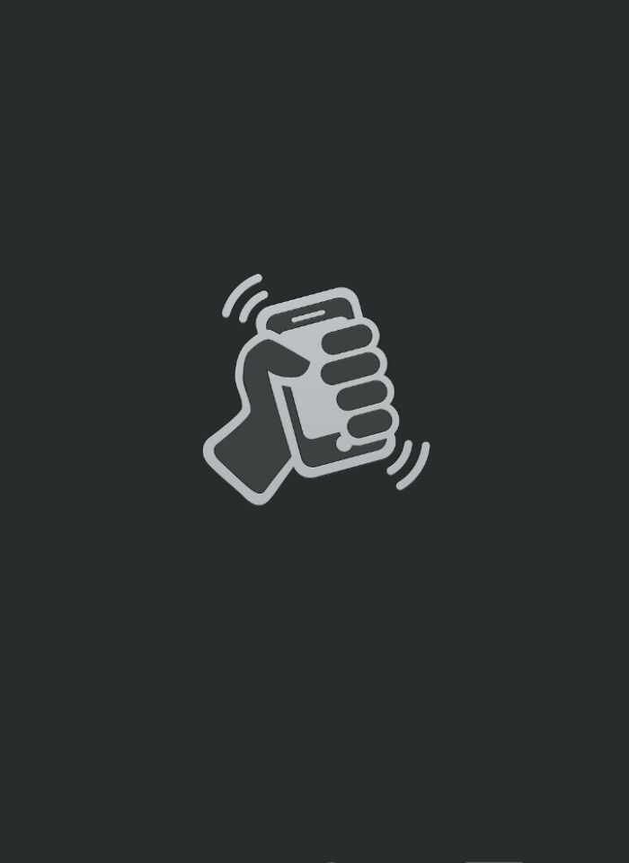

<!DOCTYPE html>
<html>

	<head>
		<meta name="viewport" content="width=device-width, initial-scale=1.0, maximum-scale=1.0, user-scalable=0">
		<meta charset="UTF-8">
		<title></title>
		<style type="text/css">
			*{
				margin: 0;
				padding: 0;
				height: 100%;
				width: 100%;
			}
			#wrap{
				/*background: url(img/y.jpg) no-repeat 0 0;*/
				background-size: 100% 100%;
				background-image: url(img/y.jpg);
				background-repeat: no-repeat;
				background-position: 0 0;
			}
		</style>
	</head>

	<body>
		<div id="wrap">
			<!---->
		</div>
		
		<script type="text/javascript">
			var oWrap = document.getElementById("wrap");
//			var img = document.getElementById("img1")
			var imgsrc = [];
			for(var i = 0; i < 40; i++){
				imgsrc[i] = "img/" + (i + 1) + ".jpg";
			}
			console.log(imgsrc)
			function random(){
				return Math.floor(Math.random() * imgsrc.length)
			}
			
			if(window.DeviceMotionEvent){
				window.addEventListener("devicemotion",yaoyiyao,false)
			} else {
				alert("对不起，您的设备不支持摇一摇")
			}
			
			//  阈值 什么程度的摇晃算是摇一摇
			var shake = 8000;
			//  最后的更新时间
			var lastupdate = 0;
			//  记录最后的X Y Z
			var lastx = 0;
			var lasty = 0;
			var lastz = 0;
			var index = 0;
//			console.log(imgsrc[random()])
			function yaoyiyao(e){
				//  获取重力加速度属性
				var acc = e.accelerationIncludingGravity;
				//  获取当前X Y Z；
				var x = acc.x;
				var y = acc.y;
				var z = acc.z;
				//  获取当前时间 毫秒数
				var nowtime = new Date().getTime();
				//  计算上一次的时间与当前时间的差
				var difftimes = nowtime - lastupdate;
				//  把lastupdate 更新一下
				lastupdate = nowtime;
				//  计算加速度
				var speed = Math.abs(x + y + z - lastx - lasty - lastz) / difftimes * 10000;
				if (speed > shake) {
					
//					img.src = imgsrc[random()];
					oWrap.style.backgroundImage = "url(" + imgsrc[random()] + ")"
					lastx = x;
					lasty = y;
					lastz = z;
				}
			}
		</script>
	</body>

</html>